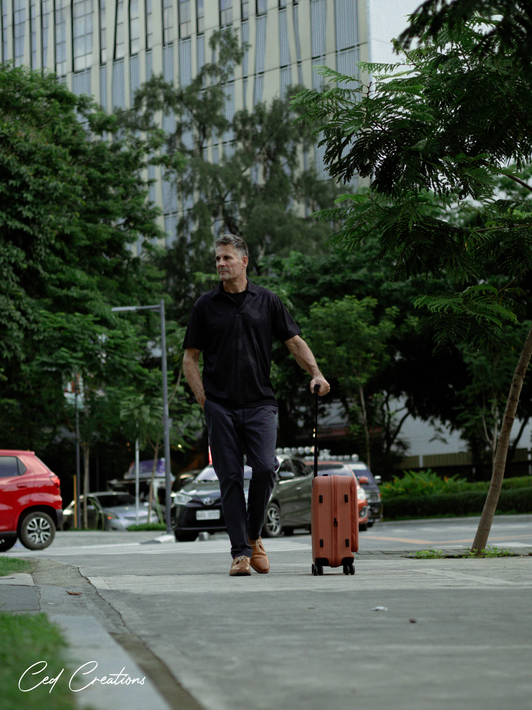
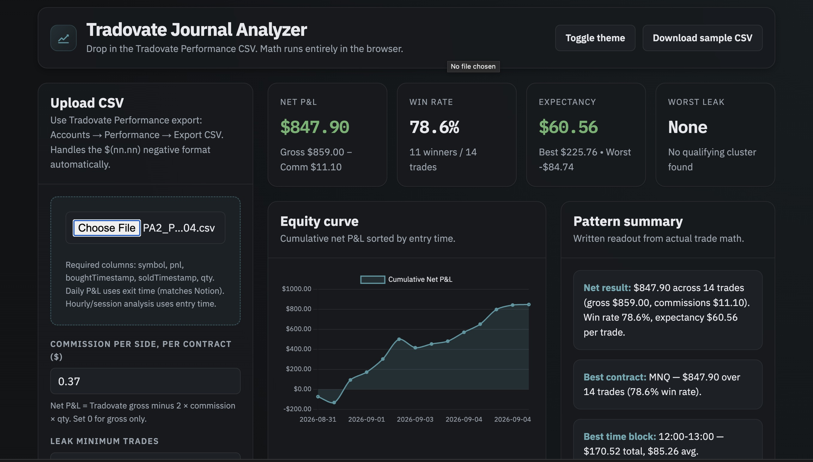

Roland spent over 30 years working across the US, Europe, and Asia before shifting fully into trading. His approach is built around ICT (Inner Circle Trader) concepts — liquidity, market structure, and price action.

After three decades across the US, Europe, and Asia, Roland now trades full-time, focused on ICT-based price action.
Roland spent over 30 years working across the US, Europe, and Asia before shifting fully into trading. His approach is built around ICT (Inner Circle Trader) concepts — liquidity, market structure, and price action.
Tradovate Analyzer
A tool built for personal use to analyze trading performance and refine execution.

Available on request.